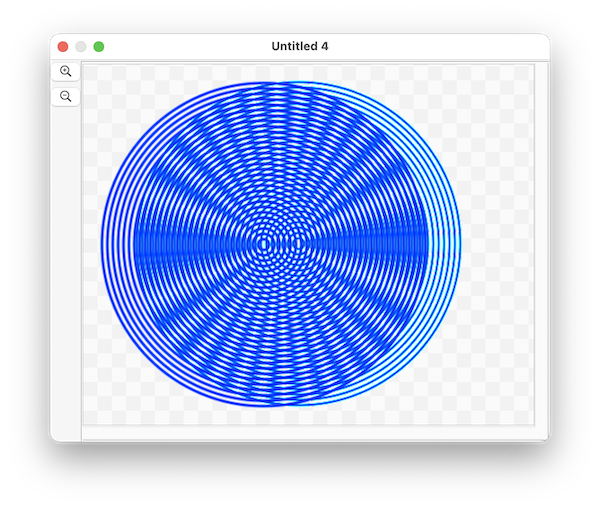

(Subrects are a new feature in version 26.4.3)
One may want to copy the data for just a portion of a document. In this case, it can be useful to refer to a subrect
A subrect is not an object on its own, but rather refers to a rectangular region of the document. One can refer to one like this:
tell application "SinterPixels"
subrect id {500, 200, 200, 500} of document 1
end tellA subrect has properties of bounds, PNG data and JPEG data
copying the PNG data can be useful for initializing a layer, as in this example, which creates a circular moire pattern:

First, the script makes 30 concentric circles, slightly offset to the left of the image. Then the PNG data for a 380 by 380 region is copied, and used as the image data when creating a new layer, which is placed to overlay almost exactly its original. Then the layer slides over pixel by pixel, creating a interesting interference pattern as it moves.
Here's the whole script:
tell application "SinterPixels"
set circleMoireDoc to make new document with properties {height:382, width:424}
tell circleMoireDoc
repeat with n from 1 to 30
make new circle with properties {position:{-20, 0}, radius:n * 6, fill color:clear, line width:3, color:blue}
end repeat
delay 1
set myPng to get PNG data of subrect id {380, 0, 0, 380}
set layerA to make new layer with properties {image data:myPng, position:{-20, 0}}
repeat with n from 1 to 40
set x coordinate of layerA to n - 20
end repeat
end tell
end tell